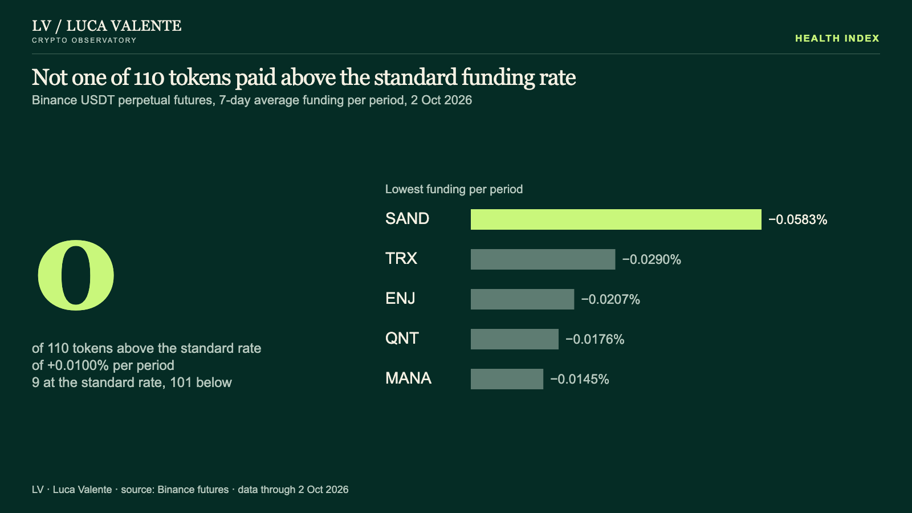

Health index: what it measures
What it measures
- A number from 0 to 100 for each DeFi protocol.
- It says where the protocol stands inside its own sector on up to five measures: deposit growth, fees on value locked, transactions, token return against BTC over 90 days, and how clean its data is.
- Each measure becomes a percentile rank among sector peers. The index is their plain average.
How to read it
- 90 means near the top of its own sector on most measures. It does not mean “90% healthy”.
- The middle of every sector sits near 50 by construction, so two sectors cannot be compared through this index.
- A protocol gets an index only above $50M in value locked, with at least 90 days of history, at least three of the five measures available and at least five peers in its sector.
- A rank inside a small group moves in large steps.
- It describes where a protocol stands today. It says nothing about what comes next.
A real example
2 Oct 2026
Not one of 110 tokens paid above the standard funding rate
